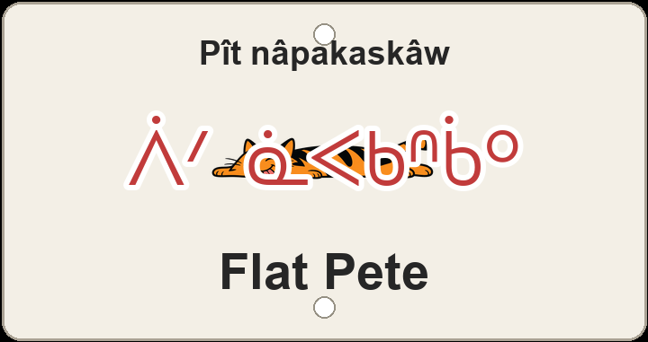

"Pete (it) is flat ground"

3D-printed sign preview — happy cat squashed flat and stretched out (screenprint); syllabics ᐲᐟ ᓈᐸᑲᐢᑳᐤ and the English name.
Flat Pete is Terwillegar wordplay on a person and a profile: English reads like a deflated Pete — someone flattened out — while the ride itself is nearly level. The plaque keeps that joke in nêhiyawêwin as Pît nâpakaskâw 'Pete (it) is flat ground': Pît stays a phonetic ᐲᐟ beside nâpakaskâw, built from nâpak- 'flat' and -askâw 'land/ground is…', so the name names flat terrain rather than a trail word.
The same nâpak- root also covers a flattened or squashed object — the comic limpness English hints at — and the screenprint makes the visual pun explicit: a happy cat squashed flat and stretched out, loving it. Two renderings stay off the plaque but show other readings: nâpakisîs Pît 'little flat one, Pete' shrinks the flatness with diminutive -isîs; Pît kâ-nâpakâw 'Pete, the one that is flat' turns the joke into a relative-clause trail name.
On the same Terwillegar web the nicknames answer each other: neighbour Flatter Pete (awasi-nâpakaskâw Pît 'even-flatter-ground Pete') pushes the same flat joke one step further; Dave's Trail (Têv omeskanaw), Upper Corkscrew (ispimihk wâwaniyâw meskanaw), Curvin Murvin (wâwani-meskanaw), Hyperloop (kayipî-wâsâkêwayiw), the GO Trail pair (âhkamê-meskanaw and âhkamê-meskanaw kotak amaciwêwin), Dancing with the Trees (nîmihitom mistikwak wîcêwakan), and Switchback Slicer (wâni-meskanaw kîskatahikêw) braid English humour into one local hillside beside Logarythmic (mistiko-akihcikêwin), Oleskiw Meadow (Olêskîw maskosiskâw), and Terwillegar - 7 (Têrwiligar têpakohp).
Like every sign in this series, Flat Pete sits on ᓀᐦᐃᔭᐤ ᐊᐢᑭᕀ Nêhiyaw-Askiy — Plains Cree territory, Treaty 6, and a homeland of the Métis Nation. These plaques are one way of putting nêhiyawêwin back on the land it was always spoken on.
A ~1 km Terwillegar line with about 8 m of climbing and 8 m of descent — a nearly flat ribbon that earns its nickname. Tap through to Trailforks on the poster for the mapped line and rider reports.
Explore the trail on Trailforks, with a local preview from the uploaded GPX.
nâpak- 'flat' + diminutive -isîs ('little flat thing') beside phonetic Pête.
Relative clause kâ-…-âw makes it a proper trail name 'the flat one'.
| English | SRO | Syllabics |
|---|---|---|
| Pete (it) is flat ground (the plaque) | Pît nâpakaskâw | ᐲᐟ ᓈᐸᑲᐢᑳᐤ |
| little flat one, Pete | nâpakisîs Pît | ᓈᐸᑭᓰᐢ ᐲᐟ |
| Pete, the one that is flat | Pît kâ-nâpakâw | ᐲᐟ ᑳ ᓈᐸᑳᐤ |
| flat (root) | nâpak- | ᓈᐸᑲ |
| Pete (phonetic) | Pît | ᐲᐟ |
SRO uses ê î ô â. Syllabics match the SRO shown.
Dialectal preferences may affect minor spelling choices; check local norms for signage.
References: itwêwina, Online Cree Dictionary, Plains Cree Dictionary
Each sign is 3D printed in Edmonton. Want one for your own trail, cabin or wall? Email hello@nehiyomtb.ca.